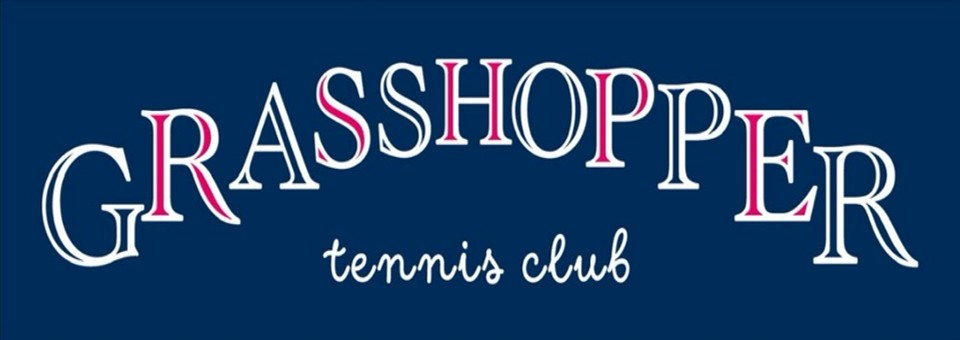
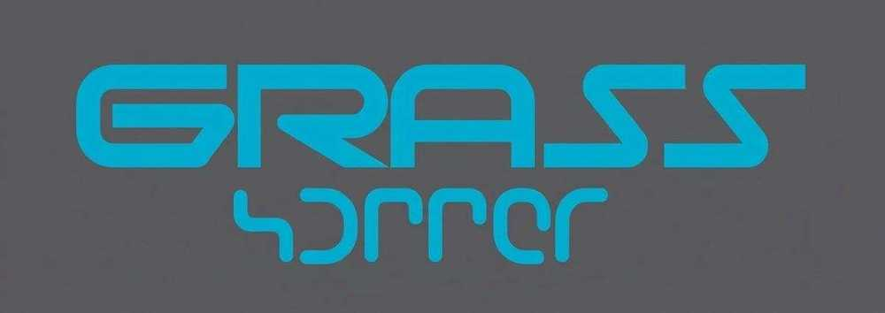
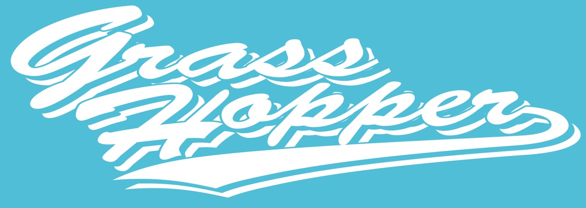
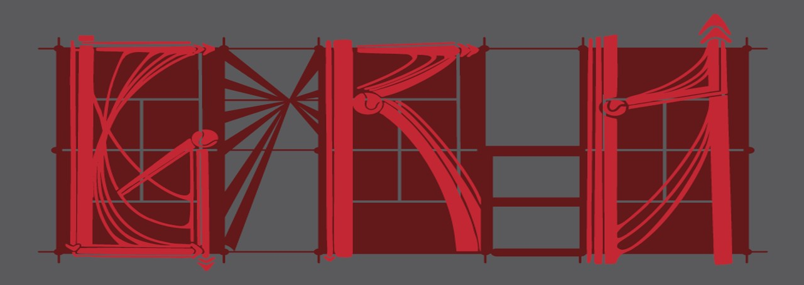
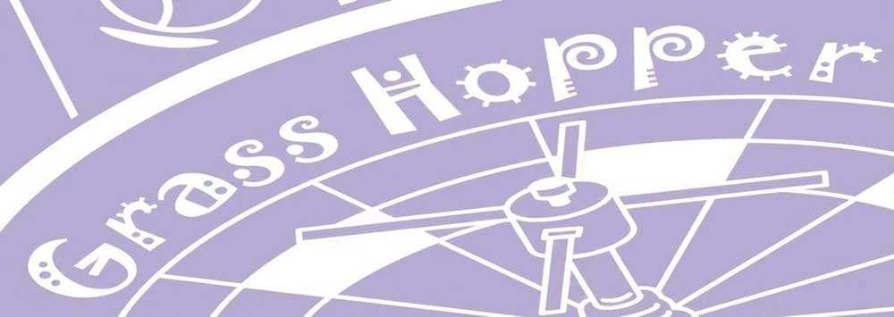

楽しく本格的にテニスをしています！
大学からテニスを始めた部員も活躍中！経験者が丁寧にサポートするので安心です。
テニスもイベントも全力で楽しみます！メリハリのある雰囲気が魅力です。
飲みたい人も飲まない人も、それぞれのペースで楽しめる雰囲気を大切にしています。
学年関係なく仲が良く、先輩後輩の壁がないアットホームな雰囲気です。

各イベントへの参加は下記の「新歓参加申込フォーム」からお申し込みください
19:15〜21:15
美香保中学校
18:00〜20:00
美香保小学校
18:30〜20:30
美香保小学校
18:00〜
未定
19:00〜21:00
フラワーテニスクラブ
順次追加予定！最新情報は Instagram・X をチェック
18:00〜20:00
フラワーテニスクラブ
順次追加予定！最新情報は Instagram・X をチェック
19:00〜21:00
フラワーテニスクラブ
順次追加予定！最新情報は Instagram・X をチェック

各月の活動をタップして写真を見る
グラホの雰囲気を一番最初に感じられるイベント！
新入生を歓迎する最初のイベントです。
同期や先輩と初めてゆっくり話せる機会で、サークルの雰囲気を知ることができます。
当日はビンゴ大会などの企画もあり、景品が当たるチャンスも！
たくさんの人と話しながら、自然と友達ができる温かい会です。
新年度最初の大会、ここからシーズンが始まる！
北大系テニスサークルが集まる春の大会です。
年度最初の大会で、初心者から経験者まで幅広く参加できます。
他サークルとの交流もあり、試合を通してテニスの楽しさを感じられるイベントです！
テニスだけじゃない、グラホの仲の良さが見えるイベント！
北大最大のイベント「北大祭」に、サークルとして出店します。
メンバーでお店を運営したり、先輩や同期と北大祭を回ったりと、
テニス以外でもサークルの仲の良さを感じられるイベントです。
みんなで協力して作り上げる北大祭は、毎年とても盛り上がります！
1年生最初の泊まりイベント！
1泊2日で札幌近郊の観光スポットに行き、観光やグルメを楽しみます。
みんなで遊んで、食べて、たくさん話して、
同期や先輩と一気に仲良くなれる人気イベントです！
夏の始まりを感じる、個人戦大会！
北大系テニスサークルが集まる夏の個人戦大会です。
ダブルスだけでなく、シングルスの試合も行われます。
試合経験を積みながら、夏のテニスを思い切り楽しめる大会です！
ミックスダブルスも楽しめる個人戦大会！
各種ダブルスに加え、男女でペアを組むミックスダブルスも行われます。
普段とは違うペアで試合に出ることもあり、
新しい組み合わせでテニスを楽しめる大会です。
雪が降る前、個人戦としては最後の大会になります！
テニスも青春も全部詰まった、グラホ最大のイベント！
3泊4日で行う夏合宿。
朝から夕方までテニスを思い切り楽しみます。
夜はBBQ・お化け屋敷・花火などイベントも盛りだくさん！
団体戦や個人戦もあり、テニスも遊びも全力で楽しめる4日間です。
サークルの仲が一気に深まる、最高の夏の思い出になります！
涼しい秋の空気の中で楽しむテニス合宿！
爽やかな気候の中で行う秋合宿。
テニスを中心に、充実した2日間を過ごします。
個人戦も行われるので、試合経験をたくさん積めるのも魅力。
テニス好きにはたまらないイベントです！
もちろん初心者も、この合宿で大きく成長できます。
チームで戦う、年間最大の大会！
北大系テニスサークルが集まる、年間で一番大きな大会です。
チームで勝利を目指して戦うため、
練習期間からチーム内の絆が深まります。
全員で応援し合いながら戦う時間は、まさに青春。
昨年はベスト4に入りました！
一年を締めくくる、冬のビッグイベント！
年末恒例のクリスマスパーティー。
プレゼント交換や余興で盛り上がります！
余興の準備を通して同期との仲もさらに深まり、
笑いあふれる楽しい時間になります。
ウィンタースポーツを楽しむ冬の人気イベント！
冬はスキーやスノーボードを楽しむ旅行へ。
昼はウィンタースポーツ、
夜はジンギスカンを食べながらみんなでワイワイ。
冬ならではの思い出がたくさんできるイベントです！
感謝と笑顔で先輩を送り出すイベント。
卒業する先輩を送り出す、毎年感動のイベントです。
現役部員がアルバムを作ったり、
その年の「一番グラホらしい人」を決める企画も行います。
笑いあり、涙ありの、グラホらしい温かい時間です。
これまでの大会実績をご紹介します
皐月杯（2025年5月開催）
女子ダブルス ベスト8 男子ビギナー ベスト8 男子ビギナー ベスト4
ヨネックス杯（2025年8月開催）
男子ダブルス ベスト16 男子ビギナー ベスト8（2組） 女子ビギナー 優勝 女子ビギナー 準優勝
フレッシュ杯（2025年9月開催）
男子ダブルス ベスト8 男子ダブルス ベスト16
団体戦（2025年10月開催）
ベスト4
サークルの幹部をご紹介します

説明会や体験練習会への参加申込はこちら
新歓イベントに参加された方の正式入会申込はこちら
最新のイベント情報や活動の様子をチェック！お気軽にフォロー・友だち追加してください

ご質問やご相談はこちらからお気軽にどうぞ